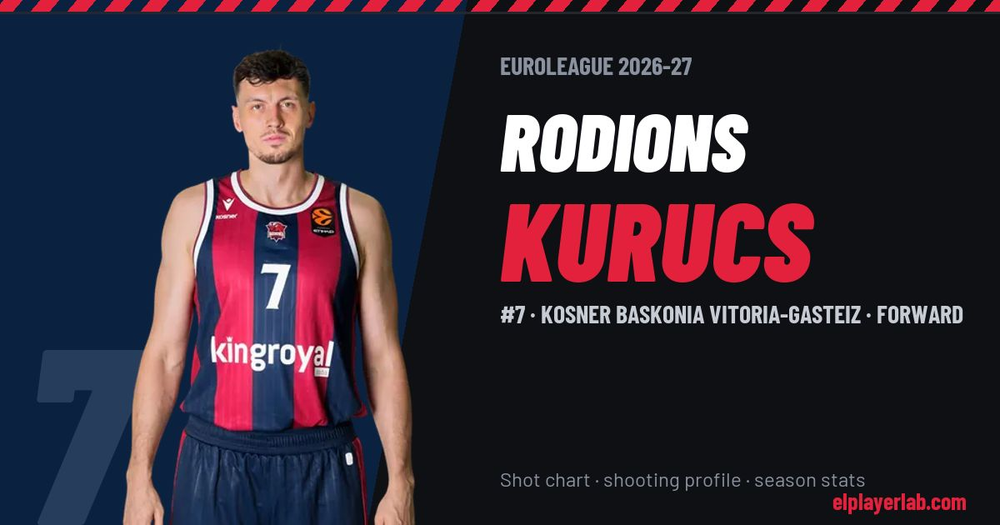

Kosner Baskonia Vitoria-Gasteiz · Euroleague 2026-27
Rodions Kurucs
#7 · Forward · Kosner Baskonia Vitoria-Gasteiz · 2026-27 · 4 games · 3.8 pts · 5.0 reb · 3.5 ast a game

- Number
- 7
- Position
- Forward
- Height
- 206 cm
- Weight
- 102 kg
- Born
- 1998-02-05
- Country
- Latvia
Career
- Baskonia 2025-2027
- Murcia 2023-2025
- SIG Strasbourg 2022-2023
- Real Betis 2022
- Partizan 2021-2022
- Milwaukee Bucks (NBA) 2020-2021
- Houston Rockets (NBA) 2020-2021
- Long Island Nets (loan) 2018-2020
- Brooklyn Nets (NBA) 2018-2019
- Barcelona B (loan) 2015-2017
- FC Barcelona 2015-2018
- VEF Rīga 2012-2015
Euroleague Player Lab: shot charts, shooting profiles and season stats for every player, rebuilt after every game.